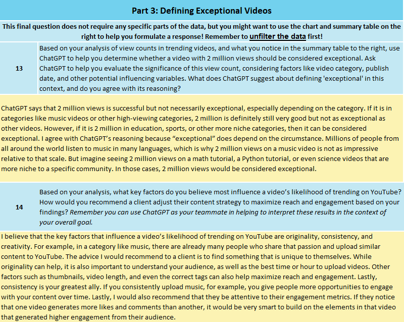
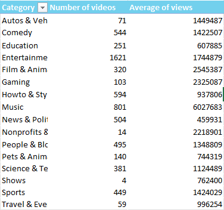
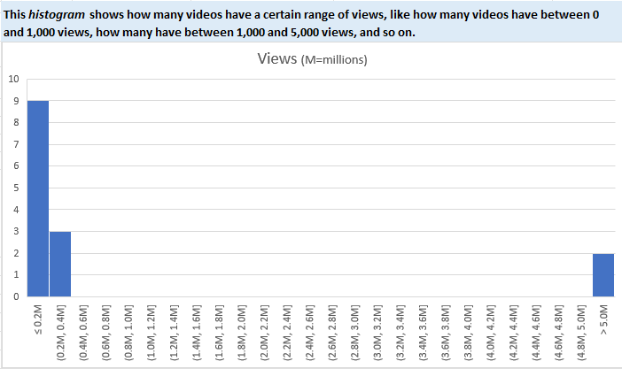

Project Overview
This project analyzed over 6,000 trending YouTube videos in Excel. The goal was to examine video performance across content categories and understand how performance differed depending on the type of content being analyzed.
Problem
With thousands of videos competing for attention on YouTube, performance can vary significantly depending on content category and audience behavior. The goal was to determine what factors may help explain high-performing videos.
Analysis
I used summary statistics, PivotTables, and data visualizations to compare the number of videos and average views across content categories. I also examined the distribution of video views to better understand differences in performance throughout the dataset.
The analysis showed that video performance varied substantially across categories, meaning that the same view count did not necessarily represent the same level of performance for every type of video.
Key Areas of Analysis
Trending Content
Analyzed more than 6,000 trending YouTube videos to identify broader patterns in video performance.
Performance Comparison
Compared the number of videos and average views across different content categories.
Performance Distribution
Examined the distribution of views to understand how performance varied throughout the dataset.
Key Finding
Video performance varied substantially across content categories. Because different categories can have different typical levels of viewership, a single view threshold does not necessarily represent the same level of performance across all types of YouTube content.
Recommendation
Content creators should evaluate performance within the context of their specific category rather than relying on a single view threshold. Creators should also monitor engagement metrics and identify characteristics of their strongest-performing videos to help guide future content decisions.
Skills Applied
Excel, PivotTables, summary statistics, data visualization, categorical comparison, performance analysis, and translating analytical findings into recommendations.
Project Screenshots
The screenshots shown below provide an overview of the work completed for this project. If you are interested in reviewing the complete project file or discussing the analysis in greater detail, please contact me and I would be happy to provide access.


